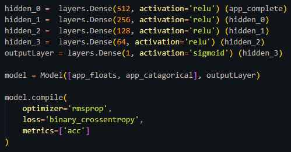

A selection of six complete projects I've been worked.
Voyager Game Engine
Real-Time Game Engine
- Game Engine Design
- Physics Engine implementation (Bullet3)
- Multi-user Git
Working as the team lead with four other students over the course of eight weeks, I lead my team to design and implemented a real-time game engine from scratch. We named the engine “Voyager” after the name of the relatively simple game we developed on top of the engine for demonstration purposes. My contribution to the engine was the integration of the Bullet3 physics engine into the project, as well as the development of the player interactions with the ship and turrets for the game demo.
- Computer Networks
- Virtualization
- Ethereum Blockchain
My Capstone team of five students was approached by Sandia National Labs with the request of developing a project of our own interest that utilized their Minimega tool so that they could get feedback on its usability from the perspective of undergraduate students. Minimega is a tool for spawning and managing large quantities of virtual machine or containers along with virtual routers and switches to allow users to model real-world computer networks.
Our team used minimega to simulate a custom Ethereum network of miners and simulated transaction traffic occurring on the network. My contribution was the integration of Geth to our containers and the automation of blockchain creation, mining, and the simulation of transactions on the network.
Home Credit Default Risk Estimator
Kaggle competition
- Machine Learning with Multi-input Neural Networks
- Tensorflow via Keras
- ROC curve evaluations
Over the span of two weeks myself along with two other classmates designed and implemented a multi-input deep learning neural network to train on the given dataset in the Kaggle Competition sponsored by Home Credit International to estimate the risk of an individual defaulting on a home loan. The data pipeline was built from scratch in python and the network was implemented in Tensorflow via the Keras front-end, consisting of multiple dense and recurrent input layers to a single output. The model was evaluated based on the area under the ROC curve.
- Embedded System Design
- Real time sensor reading and control
- Texas Instruments Development Boards
For the final project for a microcontrollers course using a Texas Instruments MSP432 development board I made a device that allows a user to power a standard outlet based on a temperature reading. The intended use case for this device is to allow a user to set the water temperature in a slow-cooker to a specific target, allowing them to sous-vide cook food. The device takes readings from a waterproof temperature sensor place inside the slow-cooker and controls the power through a solid-state relay connected to an outlet (that the slow-cooker is plugged into). The regulated temperature can be controlled with a set of buttons and the current and set temperatures are both displayed on a seven-segment display.
- Real Time Graphics
- Multi-Pass Rendering
- Manipulation of Depth/Color/Stencil buffers
As the final project for my 3D computer graphics course I was tasked with creating an interesting interactive program that utilized 3D computer graphics. I ambitiously chose to attempt to implement portal mechanics similar to what is seen in Portal. My goal was to create a portal class (C++) that could be placed in any direction, angle, or allowed to move in a scene without breaking smooth visual continuity. This is actually quite different from the Portal games which require 45-degree alignments and prevents portals from moving in the environment, which I discovered during this project was done intentionally as the algorithm I developed to position virtual cameras for dynamic portal locations was quite complex.
- VHDL CPU design
- Assembly level programing
- FPGA development boards
After implementing the RAT CPU (an in-house RISC architecture developed by faculty at Cal Poly) over eight weeks in VHDL and deployed it on a Basys 3 FPGA board, my partner and I were tasked with creating an interactive and visual program built in RAT assembly. Our project was a version of Space Invaders complete with sprites and firing mechanics. The program was mostly interrupt driven from keyboard controls and worked closely with a provided VGA controller (also implemented in VHDL). The write-up can be found below and includes the entire assembly program.